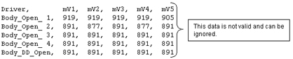
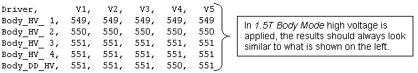
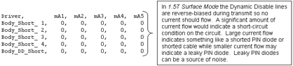
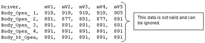
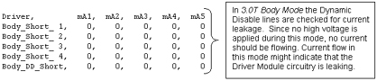
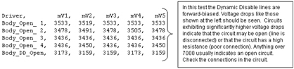
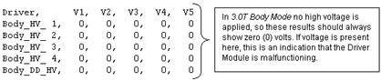
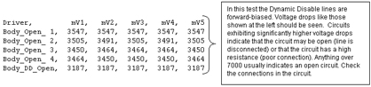
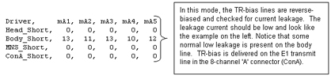
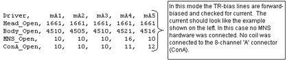

Table 1: DCB DIAGNOSTIC TESTS
| TEST NAME | TEST DESCRIPTION | ||||
| Power Supply Data | This diagnostic reads the Power Supply information from the DCB board every 5 seconds for the specified Test Duration (max 300 secs). The values are checked against the tolerances listed in the DcbConfig.cfg file. Any failing values will be printed out in red. Passing values will be printed out in blue. No error messages will be logged for failing power supplies since the Applications Code will be logging these errors automatically. See sample screen and comments in Step . | ||||
| I/O Status | This diagnostic reads the I/O Bit map information from the DCB board every 5 seconds for the specified Test Duration (max 300 secs). Each polled item and its status is printed in the window. Status messages displayed in red indicate an abnormal condition. See sample screen and comments in Step and descriptions in the table below. | ||||
| Test | Test Purpose | Nominal Result | |||
| Multi-Coil Switch | Check position of Switch SW 4 MC ENABLE | FAULTS ENABLED | |||
| Dynamic Drive Switch | Check position of Switch SW 3 DD ENABLE (not used on Driver Modules (DMs) in systems with an SSM) | FAULTS ENABLED | |||
| T/R Switch | Check position of Switch SW 2 TR ENABLE (not used on DMs in systems with an SSM) | FAULTS ENABLED | |||
| Power Status | Check incoming power to DCB Board | PRESENT | |||
| High Speed Cable | Check for external cable connected to J4. | NOT PRESENT | |||
| Front Panel Interface | Check internal ribbon cable to Front Panel I/F | PRESENT | |||
| Un-Blank Cable | Check for external cable connected to J19 | PRESENT | |||
| Un-Blank Harness | Check connection of internal cable connection | PRESENT | |||
| High Voltage Switch | Check position of Switch SW 1 HV ENABLE | FAULTS ENABLED | |||
| Fan 1 | Fan 1 operation status. | OPERATIONAL | |||
| Fan 2 | Fan 2 operation status. | OPERATIONAL | |||
| MCD 1 | Check for presence of MCD 1 Board. | PRESENT | |||
| MCD 2 | Check for presence of MCD 2 Board. | NOT PRESENT | |||
| TR/DD | Check for presence of TR/DD Board. | PRESENT | |||
| MCD 1 Cable | Check for external cable connected to J5 (MC1). | PRESENT | |||
| MCD 2 Cable | Check for external cable connected to J10 (MC2). | NOT PRESENT | |||
| Head Overtemp | Check temp. of TR/DD Board transistors. | NORMAL | |||
| Body Overtemp | Check temp. of TR/DD Board transistors. | NORMAL | |||
| MNS Overtemp | Check temp. of TR/DD Board transistors. | NORMAL | |||
| CCC Board | Check for presence of CCC Board. | PRESENT | |||
| CCC ISO 5 Volts | Check for presence of CCC Board ISO 5 Volts. | PRESENT | |||
| CCC Flash 5 Volts | Check for presence of CCC Flash 5 Volts. | PRESENT | |||
| DCB Reset State | Report state of Digital Control Board inside DM. | NO RESET | |||
| 16 Channel Switch | This diagnostic runs the following patterns on the 16 channel switch LEDs for the specified Test Duration (max 300 secs). If the test is repeated, there will be around a 5 second pause in between the pattern repeating. Note that Ch 9 through 12 and Ch 13 through 16 LEDs will always be lit except when the Ch 1-4 and 5 - 8 LEDs are in the J22 position. | ||||
| MCD Volt Test | This diagnostic outputs the multicoil
TR bias voltages listed below to the specified driver channels for measure
at MC1 J5 and MC2 J10 (future use only) on the rear of the Driver Module.
This test is helpful for dynamically checking the TR voltages using a DMM
or oscilloscope. Refer to Table 2 below
for J5 and J10 connection pinouts. The voltages will be present in the time
interval specified in Test Delay and unblanked for the period of time specified
in Un-blank Time. An Internal or External Un-blank signal can be specified
for use. The Internal Un-blank is generated inside the DM but cannot be used
outside the DM. The External Un-blank (RS-422 differential signal) can be
supplied by the FE between pins 1 and 6 at the J19, 9-pin, sub-D port. :
| ||||
| MCD Channel Disable Test | This diagnostic outputs a positive TR bias voltage to the specified driver channels for measure at MC1 J5 and MC2 J10 (future use only) on the rear of the Driver Module. This test is helpful for dynamically checking the disable TR voltage using a DMM or oscilloscope. Refer to Table 2 below for J5 and J10 connection pinouts. The voltage will be present in the time interval specified in Test Delay and unblanked for the period of time specified in Un-blank Time. An Internal or External Un-blank signal can be specified for use. The Internal Un-blank is generated inside the DM but cannot be used outside the DM. The External Un-blank (RS-422 differential signal) can be supplied by the FE between pins 1 and 6 at the J19, 9-pin, sub-D port. | ||||
| MCD Channel Enable Test | This diagnostic outputs a negative TR bias voltage to the specified driver channels for measure at MC1 J5 and MC2 J10 (future use only) on the rear of the Driver Module. This test is helpful for dynamically checking the enable TR voltage using a DMM or oscilloscope. See Table 2 below for J5 and J10 connection pinouts. The voltage will be present in the time interval specified in Test Delay and unblanked for the period of time specified in Un-blank Time. An Internal or External Un-blank signal can be specified for use. The Internal Un-blank is generated inside the DM but cannot be used outside the DM. The External Un-blank (RS-422 differential signal) can be supplied by the FE between pins 1 and 6 at the J19, 9-pin, sub-D port. | ||||
| Gather Load Data | This test checks the system TR Bias, Dynamic
Disable, and Direct Drive circuits. It is very useful for troubleshooting.
When executed it runs three separate tests. Data is sampled 5 times for
each parameter in the test and then the data is written to 3 separate text
files located in /usr/g/service/log. The 3 files generated
are:
| ||||
| Gather Load data default_tr.txt mode | Explanation of Default_tr.txt
file contents for 1.5T and 3.0T This file contains test data concerning the Dynamic Disable and Direct Drive Bias circuits. Notice that this is divided into two sections, one for 1.5T and another for 3.0T. Please make sure you are referencing the correct section for your system. See the comments to the right of each section of data for an explanation of what is being checked. 1.5T Head Mode   1.5T
Body Mode 1.5T
Body Mode   1.5T Surface Mode   3.0T
Head Mode 3.0T
Head Mode   3.0T
Body Mode 3.0T
Body Mode   3.0T Surface Mode   | ||||
| Gather Load data default_tr.txt mode | Explanation of Default_tr.txt
file contents for 1.5T and 3.0T This file contains test data concerning the Head, Body, MNS, and 8-channel connector ‘A’ (ConA) TR Bias circuits. See the comments to the right of each section of data for an explanation of what is being checked. Note that a small amount of variation between samples is not unusual. See the comments to the right of each section of data for an explanation of what is being checked. 1.5T Output File  3.0T Output File  | ||||
| Gather Load Data default_MC.txt mode | Explanation of Default_mc.txt
contents Open mode displays the current measured when reverse bias (always –5 VDC regardless of selected voltage) is applied to the LPCA circuitry and the circuitry of any coil is attached to the LPCA. Short mode displays the current measured when forward bias (in this case the selected voltage of +3, +5, or +7 VDC) is applied to the LPCA circuitry and the circuitry of any coil attached to the LPCA. The measured currents will vary based on the coil type and selected voltage. If no coils are connected to the LPCA and this test is run there are, however, typical measured currents that one can expect to see. In this state, as long as +5 VDC is the selected voltage, one should expect to see from –130ma to –150ma in the Short mode and between +155ma to +175ma in the Open mode. Values much greater than the typical values may indicate circuit damage or a short-circuit condition somewhere in the bias path while values much less than the typical values may indicate circuit damage or an open-circuit (maybe a disconnected cable?) condition somewhere in the bias path. Refer to the System Block Diagrams to help isolate the fault if troubleshooting one of these two scenarios. Run this test to troubleshoot intermittent problems and collect baseline data on any new surface coil. Stored surface coil data can be retrieved in the future and compared to current values for troubleshooting purposes. Connect any surface or phased-array coil to the LPCA adapter. Select the TR voltage normally used with the coil (5 Volts is typical but picking the wrong voltage won’t cause damage), specify a unique file name (if desired) in the Output File Name box that matches the name of the coil, and then run the test. The files are saved to /usr/g/service/log. The path and filenames are reported in the status window after the test is completed. An Internal or External Un-blank signal can be specified for use. The Internal Un-blank is generated inside the DM but cannot be used outside the DM. The External Un-blank (RS-422 differential signal) can be supplied by the FE between pins 1 and 6 at the J19, 9-pin, sub-D port.
The information below is actual results from running Gather Load Data and reviewing default_MC.txt.Case History: Faults When Using MRI PA Extrem SM Coil | ||||